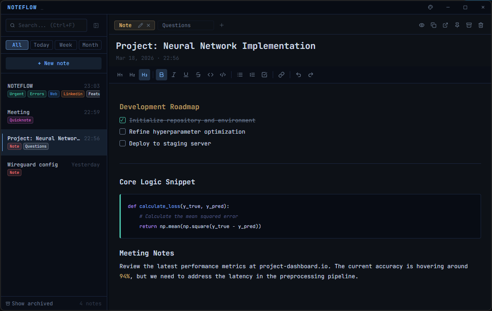
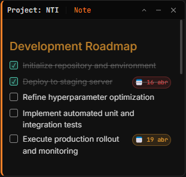
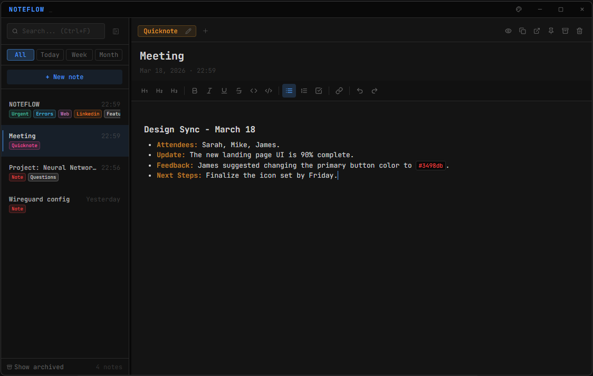

Markdown-first editor
Write with full Markdown support — headings, bold, italic, strikethrough, inline code, and code blocks. The toolbar is always one click away.
# Title
**bold** · *italic* · `code`
A keyboard-first note tool for Windows & Linux developers.
Markdown, tabs, floating sticky notes, and a zero-dep CLI for headless servers. Local files, optional private GitHub sync.


No onboarding. No workspace setup. One shortcut and you're writing.
Write with full Markdown support — headings, bold, italic, strikethrough, inline code, and code blocks. The toolbar is always one click away.
# Title
**bold** · *italic* · `code`
Launch any note as a compact, independent floating window. Keep your most important data always on top while you work in other apps.
noteflow --sticky "tasks"
A zero-dependency Node.js CLI that shares the same notes directory as the app. Capture, list and sync notes from SSH, cron jobs, or a Raspberry Pi — no GUI required.
$ noteflow add "fix CORS bug"
Organize notes into color-coded groups in the sidebar, and attach deadlines to any task. Due dates surface when they matter — no calendar app required.
[ ] ship v2 @2026-04-12
Lock any note with a password. Encrypted notes are stored as ciphertext on disk — only you can read them. No master key, no recovery backdoor.
🔒 passwords.md · 🔒 tokens.md
Sync notes to a private GitHub repository that only you control using Device Flow OAuth — no personal access tokens, no third-party cloud, no telemetry. Your files stay plain .md.
device flow · your repo only
A zero-dependency companion CLI that writes to the same notes directory as the desktop app. Capture thoughts over SSH, automate daily logs from cron, or run NoteFlow on a headless Raspberry Pi — no GUI required.
Headless install:
curl -fsSL https://raw.githubusercontent.com/yagoid/noteflow/main/cli/install-cli.sh | sudo bash
$ noteflow add "fix CORS bug" --tag urgent
✓ Appended to 06-04-2026
$ noteflow list --group backend --json
[{ "title": "Sprint 14", ... }]
$ noteflow push
✓ Synced 12 notes → github.com/you/notes
$ noteflow new "Retro" --json
# { "id": "k4n7x2", "title": "Retro" }
Clean. Fast. Exactly what you need — nothing more.

| Feature | NoteFlow | Sticky Notes | Notepad |
|---|---|---|---|
| Markdown support | ✓ | ✗ | ✗ |
| Sticky notes | ✓ | ✓ | ✗ |
| No third-party cloud accounts | ✓ | ✗ | ✓ |
| Optional private GitHub backup | ✓ | ✗ | ✗ |
| Headless CLI / SSH usable | ✓ | ✗ | ✗ |
| Free & open source | ✓ | ✓ | ✓ |
Download the .exe installer from GitHub Releases. Run it, and NoteFlow opens in seconds — no account, no setup wizard, no telemetry.
.exe installer from the button below
Windows 10 / 11 · x64 · ~90 MB
$ git clone https://github.com/yagoid/noteflow.git
# or just download the .exe from Releases
$ cd noteflow && npm install
$ npm run dev
✓ NoteFlow running on localhost